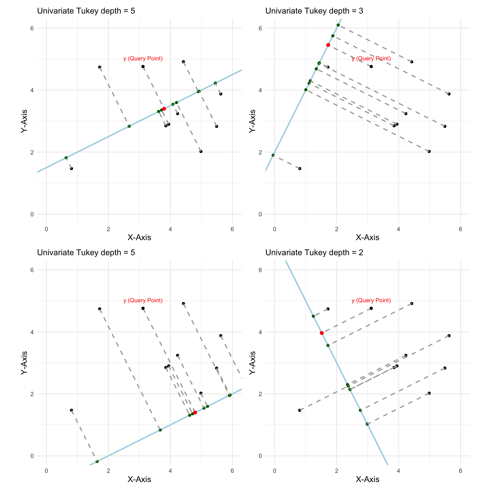
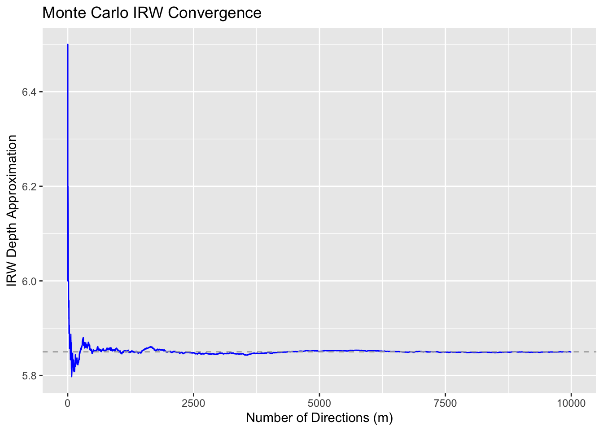

Abstract
With the geometrical foundation of the bivariate Tukey sweep algorithm solidified last week, my focus shifted toward Integrated Rank-Weighted (IRW) depth. While Tukey depth is a powerful depth measure, finding the minimum univariate depth over all possible projections makes Tukey Depth difficult to compute. IRW depth resolves this by averaging the univariate depths across all projections rather than taking the absolute minimum. Since there are no built-in R packages like ddalpha that help verify IRW computations, I implemented the algorithm three distinct ways upon Dr. Leblanc’s recommendation. My implementations range from an exact geometric calculation to a pure Monte Carlo approximation, which helped ensure the mathematical correctness of my results.
Visualizing IRW Depth
In this highly simplified example, let’s assume there are a total of 4 projections. Now, Tukey depth measure tells us to find the minimum univariate depth over all projections. So, the Tukey depth of our query point would be \(2\). On the other hand, IRW depth is computed by averaging the univariate depth over all projections. Thus, the IRW depth of the query point is \(\frac{5+5+2+3}{4} = 3.75\). Hence, evaluating IRW is simply a matter of casting directional vectors, finding the univariate Tukey depth for each, and averaging the results.
Theoretical Foundations: Tukey vs IRW Depth
Core Concepts: While IRW depth shares much of its structure with Tukey depth, the core difference lies in how the final value is extracted from the projections.
The Tukey Shortcoming: Recall that Tukey depth takes the absolute minimum 1D depth across all possible projections. Since we strictly look for the minimum, it outputs a step function, which could result in many points sharing the same rank/depth value. Moreover, standard calculus techniques fail when optimizing a step function which further makes Tukey Depth difficult to compute.
The IRW Advantage: IRW depth solves this by taking the average (or integral) of the 1D depths across all uniformly distributed projection directions. By averaging the depths rather than isolating the minimum, IRW provides a strictly decreasing, smooth continuous depth function from the center outward. Moreover, using this integration approach makes it easy to approximate the depth of a point in higher dimensions through Monte Carlo techniques. (Ramsay et al. 2019)
Literature Context: As extracted from (Ramsay et al. 2019) and simplified by Dr. Leblanc in his research talk slides, the IRW Depth of a point \(y\) with respect to a sample \(X = (X_1,...,X_n)'\) of \(R^d\) is given by \[D_{IRW}(y, X) = \frac{1}{Area(S^{d-1})} \int_{S^{d-1}}D_1(u'y,X(u))du\] where \(S^{d-1} = \{u \in R^d:\lVert \mathbf{u} \rVert = 1\}\), \(D_1(u'y,X(u))\) is the 1D Tukey depth, and \(X(u)=(u'X_1,...,u'X_n)'\) is the projected sample.
Computational Implementation & Verification Strategy
The Verification Challenge: One of the immediate hurdles this week was the lack of a built-in verification tool. Unlike Tukey depth, there is no function for IRW depth within the ddalpha package (or any other standard R libraries that I explored). This meant I could not simply run my algorithm and compare the output to an answer key. To ensure the mathematical integrity of my code, I had to come up with a robust verification strategy relying on algorithmic independence. Dr. Leblanc suggested leveraging the convergence property of Monte Carlo simulations to verify the code. If an exact geometrical approach and a randomized approximation approach yield the same value, the implementation is successful. To achieve this, I implemented IRW depth in three distinct ways:
Exact IRW Depth (The Sweep Method): For this implementation, I referenced the approach of representing IRW depth as a weighted average of a set of univariate Tukey ranks outlined in (Ramsay et al. 2019). This approach relies on the fact that the univariate depth is constant over distinct patches. Leveraging the sorted angular sweep from Week 3, I computed the exact IRW depth by tracking the boundaries where the depth changes. Instead of keeping track of the absolute minimum, I stored every univariate depth observed in a vector. I calculated the angular slice size (the weight of the total pie) for each depth, and summed them using the following logic: \[D_{IRW Exact} = \sum_{i=1}^{k} w_i d_i\] where \(w_i\) is the size of the angular slice (proportion of projections out of total), and \(d_i\) is the depth observed in that slice.
Semi-Randomized IRW (Sweep + Randomization): Using the exact slices computed above, I introduced randomization. I generated \(m\) random angles (\(\theta\)) uniformly. For each \(\theta\), the algorithm determined which angular slice it landed in and stored the corresponding pre-computed depth for that slice. The final depth was the average of these \(m\) depths.
Pure Monte Carlo Approximation (No Pre-Setup): Since IRW depth requires computing an average, there is a very simple Monte Carlo algorithm for approximating the depth of a point. For this implementation, we remove the angular sweep entirely. Similar to the strategy explained by (Durocher et al. 2017), this is purely a brute force implementation. I generated \(m\) random projection vectors. For each vector, the data was projected onto the line, and the 1D depth was calculated. The final IRW depth is the average of the depths computed for all \(m\) projections. The law of large numbers guarantees that this algorithm does converge to the exact value (Ramsay et al. 2019) as computed in implementation 1 as \(m \rightarrow \infty\), and the graph below confirms this result.

The grey dashed line represents the depth computed under the exact implementation and we observe that after being chaotic for roughly 1000 directions, the approximation starts converging to the exact value (i.e. the dashed line.)
The Result: All three implementations successfully converged to the same depth value. As Dr. Leblanc noted, because the exact implementation and the Monte Carlo implementation are independent of one another, their depth values matching acts as a reliable validation tool for the code.
Note: The complete, executable R script for all three implementations is available in the project repository.
Future Work
- Optimize the R syntax in the algorithm to eliminate computational bottlenecks.
- Check how the algorithm scales as \(n \rightarrow \infty\). Confirm runtime matches the theoretical expectation.
- Research curiosity - Explore implementation of IRW logic in 3D space.
- Begin literature review and implementation for Simplicial depth.
References
Durocher, Stephane, Alexandre Leblanc, and Matthew Skala. 2017. “The Projection Median as a Weighted Average.” J. Comput. Geom. 8: 78–104. https://api.semanticscholar.org/CorpusID:4936625.
Ramsay, Kelly, Stéphane Durocher, and Alexandre Leblanc. 2019. “Integrated Rank-Weighted Depth.” J. Multivar. Anal. (USA) 173 (C): 51–69. https://doi.org/10.1016/j.jmva.2019.02.001.